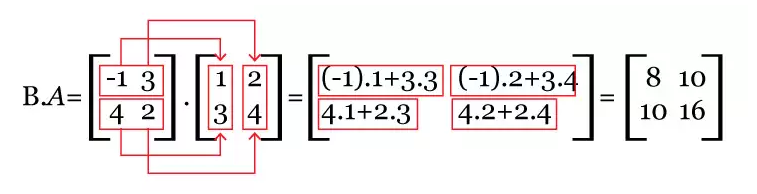
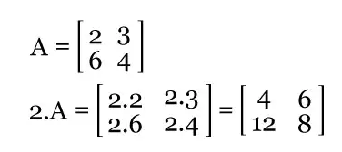

MULTIPLICAÇÃO DE MATRIZES
Produto entre linhas e colunas
Para a multiplicação de matrizes é necessário uma regra: o número de colunas da primeira deve ser igual ao número de colunas da segunda.
Como cada matriz é um conjunto de elementos ou entradas organizadas em linhas e colunas, a multiplicação de duas ou mais matrizes
é feita com os elementos que integram as linhas da primeira e entradas das colunas da segunda.
Essas colunas são colocadas de cima para baixo, e as linhas da esquerda para a direita. Elas podem aparecer no conjunto principal,
no qual os elementos de i (linhas) são iguais aos de j (colunas), ou secundário - soma de i com j.
Como fazer a multiplicação de matrizes?
Na multiplicação de matrizes, além da igualdade no número de linhas de uma e colunas da outra, a matriz resultante deve apresentarA m x n . Bn x p = Cm x p
Vamos entender no exemplo a seguir como as regras funcionam:
Dada a multiplicação de C = B.A, temos:
Primeiramente, multiplica-se a primeira linha de B com a primeira coluna de A e, em seguida, os soma:
(-1) . 1 + 3.3 = - 1 + 9 = 8
Depois, multiplica-se e soma-se a primeira linha de B com a segunda coluna de A:
(-1) . 2 + 3.4 = - 2 + 12 = 10
Multiplica-se e soma-se a segunda linha de B com a primeira coluna de A:
4.1 + 2.3 = 4 + 6 = 10
Por fim, multiplica-se e soma-se a segunda linha de B com a segunda coluna de A:
4.2 + 2.4 = 8 + 8 = 16
Logo, a matriz resultante é:
Vale ressaltar que a multiplicação de B.A não é o mesmo que A.B. Isso acontece porque não aplica-se a propriedade comutativa na multiplicação de matrizes.
A matriz identidade é a única que não sofre modificações, pois como os elementos da sua diagonal principal são todos 1 e restantes 0,
qualquer outra matriz que for multiplicada por ela resultará nos mesmos valores.
Matriz e o número real
Nas operações multiplicativas com números reais é preciso calcular cada entrada de uma matriz pelo número em evidência, que é classificado de escalar.
Ou seja, se A for uma matriz de ordem mxm e a um certo número real, a matriz resultante é composta pelos produtos entre a e os elementos de A. Confira:
3 . [ 5 7 10] = [ 3.5 3.7 3.10 ] = [ 15 21 30 ]
